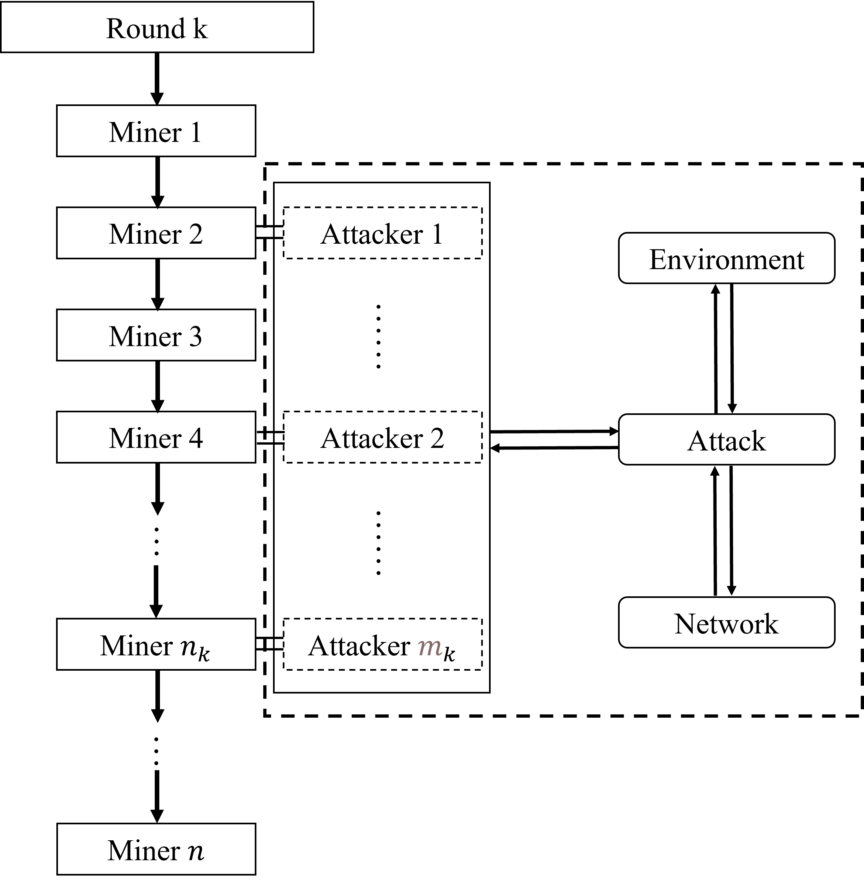

ChainXim Developer Guide
Framework
ChainXim is mainly composed of six components: Environment, Miner, Adversary, Network, Consensus, and Blockchain. Among them, the three major components, Consensus, Adversary, and Network, are configurable and replaceable to adapt to different types of consensus protocols, attack vectors, and network models. The relationships between the six abstract components are shown in the figure below:

Each abstract component is implemented by one or more corresponding classes. The Consensus class and the Network class corresponding to Consensus and Network are only abstract classes, and functional classes need to be derived to implement various consensus protocols and network models.
Currently implemented consensus protocols (all options available for the consensus_type configuration):
| Consensus Class (Derived from Consensus) | Description |
|---|---|
| consensus.PoW | Proof of Work |
Currently implemented network models (all options available for the network_type configuration):
| Network Class (Derived from Network) | Description |
|---|---|
| network.SynchronousNetwork | Synchronous Network Model |
| network.DeterPropNetwork | Network Model Based on Propagation Vector |
| network.StochPropNetwork | Network Model with Bounded Delay and Increasing Receiving Probability with Rounds |
| network.TopologyNetwork | Complex network model, the topology can be randomly generated. |
Environment is the core of the simulator. Users execute the main program in main.py to start the simulation. The main program initializes the Environment object according to the simulation parameters, calls exec to start the simulation loop, and calls view_and_write to generate the simulation results and write them to the Results folder after the simulation ends.
ChainXim discretizes time, abstracting it into "rounds" to simulate the behavior of each node in units of rounds. Each round sequentially activates miners to perform consensus operations. After all nodes have been activated once, the diffuse method in the network class is called to transmit messages between miner nodes. (See Environment & Model Assumptions section for details)
Environment & Model Assumptions
The Environment component is the cornerstone of the ChainXim program, supporting the architecture of the simulator system model to interface with the other five major components. It also defines some key parameters in the simulator and encapsulates some functions needed by the other components of the simulator. To facilitate understanding of this part, the model assumptions of ChainXim will be introduced first.
Model Assumptions
The system model design of ChainXim mainly refers to the following paper:
- J. A. Garay, A. Kiayias and N. Leonardos, "The bitcoin backbone protocol: Analysis and applications", Eurocrypt, 2015. https://eprint.iacr.org/2014/765.pdf
ChainXim divides continuous time into discrete rounds, and all nodes in the network (including honest miners and dishonest attackers) will perform a certain number of operations in each round to compete for the accounting rights and generate and propagate new blocks. The total number of miners in the network is defined as \(n\), among which \(t\) miners belong to dishonest attackers. In each round, all miners are awakened in sequence according to their numbers and take actions based on their identities. Honest miners will strictly follow the consensus protocol to generate blocks; attackers will choose to follow the protocol or launch attacks based on the actual situation. Note that in each round, the attack module will only be triggered once, and each trigger will perform a complete attack action. In the current version, attackers will be randomly triggered when it is the turn of an attacker in each round. Although the order of awakening different miners is different, there is no actual order within the same round.
To simulate the specific operations of the above parties in the real blockchain system, ChainXim refers to two important methods proposed in the paper, namely the Random Oracle and Diffuse methods, which are defined in ChainXim as follows:
- Random Oracle: Taking the PoW consensus as an example, each miner can perform up to \(q\) hash actions in each round (the \(q\) value may be different for different miners), i.e., \(q\) opportunities to perform hash calculations. Each miner will perform \(q\) random oracle operations, i.e., input a random number into the hash function and verify whether the result is less than the given difficulty value. If the miner successfully finds a result lower than the target value, it is considered that a block has been successfully generated. Blocks generated by different miners in the same round are considered to be generated simultaneously.
- Diffuse: When a miner generates a new block, it will upload this block to the network, and the network layer will be responsible for message propagation. The propagation logic will vary depending on the configuration of the network layer. In addition, attackers may choose not to upload the blocks they mined in the current round. Only blocks uploaded to the network layer will be propagated through this method. In the ChainXim model, it is assumed that miners controlled by attackers have a dedicated communication channel independent of the blockchain system, i.e., once any miner belonging to the attackers receives a block, all miners under the attacker's control will receive the block in the next round.
Note that the above Diffuse method is implemented in the Network component, while the Random Oracle method is implemented in the Consensus component. The Random Oracle model was initially proposed for the PoW consensus protocol in Bitcoin. To make the simulator compatible with other consensus protocols, such as PBFT, which is a protocol based on interaction, ChainXim will consider overloading this method in the Consensus component in the future. The exec function in the Environment is set to complete the above two methods at once: In each round, all miners will be awakened in sequence and perform the Random Oracle method: if the miner is honest, the exec function will call the Consensus component to perform related operations; if the attacker is activated, the Attacker component will be called to perform related operations (the Attacker component will only be called once in each round). When all miners have completed their actions, i.e., the round ends, the exec function will execute the Diffuse method in the Network component to propagate blocks in the network. A specific example is shown in the figure below:

In this example, \(n=4\), \(t=1\). When the k-th round (Round \(k\)) begins, the four miners will be awakened in sequence according to their numbers and complete their \(q\) actions. Among them, only Miner 2 successfully obtained the accounting rights and propagated the generated block (Diffuse method). Due to different propagation delays, Miner 1 and Miner 3 successfully received the block in round k+1, while Miner 4 received the block in round k+2. No miner completed block generation in round k+1. In round k+2, both Miner 1 and Miner 4 completed block generation, but Miner 4, being an attacker, adopted a selfish mining attack strategy, placing the block generated by the Random Oracle on a private chain and not propagating it to other miners during the Diffuse method. In round k+3, only Miner 4 completed block generation. At this point, in its view, its private chain is longer than the main chain, so it propagates the private chain to other miners through the Diffuse method, causing a fork in the blockchain. In the view of miners who received the private chain, the attacker's chain is the longest valid chain. In round k+4, if Miner 1 or Miner 2 did not receive the private chain and continued mining on the honest main chain, their interests might be harmed.
In summary, ChainXim effectively abstracts the generation and propagation of blocks in the blockchain network using discrete rounds and limited actions.
Environment
Overall, the Environment component completes the construction of the overall model. The initialization function sets the basic parameters according to the input parameters, calls other components for their respective initialization, sets \(n\) miners, selects \(t\) attackers, configures the global blockchain, network components, attack components, etc., for subsequent operation and evaluation. The main functions in the Environment component and their respective parameters are shown in the table below:
| Function | Parameters | Description |
|---|---|---|
| select_adversary_random | - | Randomly select a certain number of miners as attackers |
| select_adversary | *Miner_ID:tuple | Set the corresponding miners as attackers by specifying their IDs |
| envir_create_global_chain | - | Create the global blockchain in the environment |
| attack_excute | round:int | Execute the attack type defined in the attack module |
| exec | num_rounds:int, max_height:int, process_bar_type:str | Execute the simulation for the specified number of rounds or height; num_rounds sets the total number of rounds, max_height sets the termination height |
| assess_common_prefix | - | Calculate and evaluate the common prefix property of the blockchain |
| assess_common_prefix_k | - | Optimized method for calculating and evaluating the common prefix |
| view | - | Output the simulation results in the terminal, including the generated blockchain structure diagram, throughput, growth rate (reflecting chain growth), fork rate, and evaluation of common prefix and chain quality |
| view_and_write | - | Output the simulation results and save them in a txt file |
| process_bar | - | Display the current simulation progress, outputting a real-time progress bar and percentage in the terminal |
In the table above, envir_create_global_chain initializes and generates a global blockchain. After that, this chain will serve as the global blockchain tree and the global longest valid chain from a global view.
The main program initializes the Environment object according to the simulation parameters, calls exec to start the simulation loop, and implements the random oracle method and diffusion method described in the paper. For attackers, the corresponding attacking operations needs to be executed through attack_excute. After the simulation ends, view_and_write is called to collect and output the simulation results.
Miner
The Miner component defines the miner class, which is used to create miners and perform related operations. The functions defined in it are shown in the table below:
| Function | Parameters and Types | Return Type | Description |
|---|---|---|---|
| join_network | network:Network | - | Miners join the network during network initialization and initialize the network interface |
| forward | msgs:list[Message], msg_source_type:str, forward_strategy:str, spec_targets:list, syncLocalChain:bool | - | Forward messages to other nodes through the network interface layer. msgs is the list of messages to be forwarded; msg_source_type is the message source type, SELF_GEN_MSG indicates generated by this miner, OUTER_RCV_MSG indicates received from the network; forward_strategy is the message forwarding strategy; spec_targets is the list of target nodes to forward to if forward_strategy is SPECIFIC; syncLocalChain indicates whether to synchronize the local chain with neighbors, preferably when a new block is generated. |
| set_adversary | isAdversary:bool | - | Set whether each miner is an attacker |
| receive | msg:message | bool | Process received messages, actually calling the receive method in the consensus component |
| launch_consensus | input:any | Block|None, bool | Start the consensus process, actually calling the consensus_process method in the consensus component, returning new messages new_msg (None if no new messages) and a flag msg_available indicating whether there are new messages |
| BackboneProtocol | round:int | Block|None | Operations performed by honest miners each round. First, receive information from the network (blockchain update), then call the mining function to try to generate a block. If the blockchain is updated (received a new block or generated a new block), return the new message to the environment component, otherwise return empty |
Considering the scalability of the simulator, the functions defined by the miner component itself are actually very few. Most of the functions are defined in the consensus component and the environment component. This component actually serves as a bridge connecting various components. Miners can only interact with the network through the network interface self.NIC:NetworkInterface. The network interface calls the receive function to pass messages sent by other nodes to the current node, and the current node uses the forward function to send messages to the network interface layer, which then sends the messages to other nodes through the network layer.
Chain Data
This section introduces the basic data types in ChainXim. All block data generated during the simulation is described by data.BlockHead, data.Block, and data.Chain. The following figure shows the data structure of the blockchain in ChainXim. All Blocks are organized in a multi-way tree, where each pair of parent and child nodes are bidirectionally linked through the parentblock and next attributes in Block. The root and end nodes of the tree are recorded in Chain.head and Chain.last_block, respectively. The Chain object in the figure contains a blockchain with a height of 2. Except for the genesis block Block 0, there are three blocks, with a fork occurring at block height 1. Block 0 - Block 1 - Block 3 forms the main chain, and Block 3 is the tail of the main chain.

Message
Message is the base class for all messages generated by miners during mining. Currently, the main message is the Block. The attributes of Message currently only include the message length size, in MB.
BlockHead
BlockHead is used to define the data in the block header. data.BlockHead is an abstract base class, and its calculate_blockhash is an abstract method that needs to be defined in the consensus class by creating a new BlockHead and overriding calculate_blockhash. BlockHead only contains the attributes listed in the table below:
| Attribute | Type | Description |
|---|---|---|
| prehash | bytes | Hash of the previous block |
| timestamp | int | Timestamp when the block was created |
| content | Any | Data carried in the block, generally transaction information or Merkle Root in actual systems |
| miner | int | ID of the miner or attacker who generated the block |
Note: Since this simulator focuses more on the propagation of blocks in the network, the data stored in the blockchain (transactions, smart contracts, etc.) is abstracted using the content attribute.
Block
Block is used to define the data in the block. In addition to the block header blockhead, it also contains the attributes listed in the table below:
| Attribute | Type | Description |
|---|---|---|
| name | str | The friendly name of the block, formatted as the letter B + a sequence number indicating the order of block generation |
| height | int | Block height |
| blockhash | bytes | The block hash automatically calculated when the block is constructed |
| isAdversaryBlock | bool | Whether the block is generated by an attacker |
| isGenesis | bool | Whether it is a genesis block |
| next | list[Block] | A list of references to child blocks |
| parentblock | Block | Reference to the parent block |
Note that the blockhead attribute is read-only and cannot be modified after the Block object is constructed. In addition, the Block class has two auxiliary methods:
| Method | Input Parameters and Types | Return Type | Description |
|---|---|---|---|
| get_height | - | int | Returns Block.height |
| calculate_blockhash | - | bytes | Calls blockhead.calculate_blockhash, saves the hash value to blockhash, and returns the value of blockhash |
Finally, to enable the Block object to be transmitted in the Network, the Block class is derived from the Message class.
Chain
Chain is mainly used to store the root and end nodes of the blockchain and defines a series of functions needed to operate the blockchain. Chain contains the attributes listed in the table below:
| Attribute | Description |
|---|---|
| head | Stores the genesis block of the blockchain |
| last_block | Reference to the end block of the main chain, which is the longest chain in the multi-way tree for PoW systems |
| miner_id | The ID of the miner or attacker maintaining the blockchain, or None for the global blockchain |
The Chain class has various methods that can be used to add new blocks, merge chains, search for blocks, visualize the blockchain, save blockchain data, and more, as shown in the table below:
| Method | Input Parameters and Types | Return Type | Description |
|---|---|---|---|
| search_block | block: Block | Block|None | Searches for the target block in the local block tree, returns the block if found, otherwise returns None |
| search_block_by_hash | blockhash: bytes | Block|None | Searches for the target block by hash in the local block tree, returns the block if found, otherwise returns None |
| get_last_block | - | Block | Returns Chain.last_block |
| set_last_block | block: Block | - | Checks if the block is in the chain, then sets the block as last_block |
| add_blocks | blocks: Block | list[block], insert_point: Block |
Block | Deep copies the block and adds it to the chain. Blocks can be of type list[Block] or Block, insert_point is the position to insert the block, starting from its back, default is last_block |
| ShowStructure1 | - | - | Prints the entire multi-way tree with head as the root node to stdout |
| ShowStructure | miner_num:int | - | Generates blockchain visualisation.svg, showing the round in which each block was generated and the parent-child relationship |
| ShowStructureWithGraphviz | - | - | Generates a blockchain visualization graph in the blockchain_visualization directory using Graphviz |
| get_block_interval_distribution | - | - | Generates a block interval distribution graph block interval distribution.svg |
| printchain2txt | chain_data_url:int | - | Saves the structure and information of all blocks in the chain to chain_data_url, default is 'Chain Data/chain_data.txt' |
| CalculateStatistics | rounds:int | dict | Generates blockchain statistics and returns the statistics through a dictionary, rounds is the total number of simulation rounds |
Consensus
This section introduces the consensus layer architecture of ChainXim, using Proof of Work (PoW) as an example to explain the implementation of consensus protocols in ChainXim. The Consensus class is an abstract class that describes the basic elements of the consensus layer in ChainXim. To implement a consensus protocol in ChainXim, a new consensus class needs to be extended from the Consensus class. The currently implemented consensus class is PoW. The following diagram shows the class diagram illustrating the relationship between PoW and Consensus.

Each PoW object contains the following attributes:
| Attribute | Type | Description |
|---|---|---|
| local_chain | Chain | The local chain, which is the blockchain from the vision of a miner, including the main chain and all forks known to the miner |
| _receive_tape | list | The receive queue, where blocks are added when they arrive at the miner, and the queue is cleared after the miner's round ends |
| target | bytes | The target value for the hash calculation problem in PoW, a block is valid only if its hash is less than this target value |
| q | int | The number of hash calculations a single miner can perform per round |
The PoW class simulates the block generation and validation behavior in the Proof of Work mechanism through the following methods and resolves forks using the longest chain rule:
| Method | Input Parameters and Types | Return Type | Description |
|---|---|---|---|
| mining_consensus | miner_id:int, isadversary:bool, x: Any, round: int |
Block, bool | None, bool |
Executed once per round, modifies the nonce q times to calculate the block hash, if the hash is less than the target value, returns the Block object and True, otherwise returns None and False |
| local_state_update | - | Block, bool | Verifies the blocks in _receive_tape one by one, merges the blocks into the local chain, finally determines the main chain using the longest chain rule, returns the tail of the main chain and a flag indicating whether the main chain has been updated if the new block is valid but cannot be merged into the local chain due to missing intermediate blocks, it is placed in the cache |
| valid_chain | lastblock: Block | bool | Verifies the chain ending with lastblock |
| valid_block | block: Block | bool | Verifies whether the block is valid, i.e., whether the block hash is less than the target value |
Consensus Protocol and Block
The following diagram shows the inheritance and derivation relationships related to consensus in Chainxim. As shown in the figure, the PoW.BlockHead and PoW.Block classes are subclasses of the Consensus class, derived from data.BlockHead and data.Block. The BlockHead and Block classes of the Consensus class inherit from data.BlockHead and data.Block, respectively, and redefine the initialization interfaces of BlockHead and Block.

Consensus.BlockHead and Consensus.Block are initialized through the following interfaces.
# consensus/consensus_abc.py
class Consensus(metaclass=ABCMeta):
class BlockHead(data.BlockHead):
def __init__(self, preblock:data.Block=None, timestamp=0, content=0, miner_id=-1):
class Block(data.Block):
def __init__(self, blockhead: data.BlockHead, preblock: data.Block = None, isadversary=False, blocksize_MB=2):
# consensus/pow.py
class PoW(Consensus):
class BlockHead(Consensus.BlockHead):
def __init__(self, preblock: Consensus.Block = None, timestamp=0, content=0, miner_id=-1,target = bytes(),nonce = 0):
super().__init__(preblock, timestamp, content, miner_id)
self.target = target # Difficulty target
self.nonce = nonce # Random number
def calculate_blockhash(self) -> bytes:
As you can see, when initializing PoW.BlockHead, in addition to the input parameters of Consensus.BlockHead, target and nonce are also added. The input parameters inherited from Consensus.BlockHead also inherit default values, and the newly added parameters also need to specify default values. These default values will be useful when generating the genesis block. In addition, the calculate_blockhash method needs to be rewritten according to the block definitions in various consensus protocols.
Initialization of the Consensus Class
When initializing the Consensus class, a miner ID is required as a parameter. However, when initializing a consensus class derived from Consensus, additional consensus parameters are generally needed. These parameters are carried by consensus_param, which is specified when constructing the Environment object (refer to the source code) and passed to the consensus object during the initialization of the Miner class. In PoW, consensus_param includes the following three items:
| Attribute | Type | Description |
|---|---|---|
| target | str | The hexadecimal target value for the hash calculation problem in PoW. A block is valid only if its hash value is less than this target value. |
| q_ave | int | The average number of hash calculations a single miner can perform per round. |
| q_distr | str | The distribution of the number of hash calculations a single miner can perform per round. |
Note: The parameter q specifies the maximum number of hash calculations each miner can perform per round, determined by q_distr and q_ave. When q_distr is equal, all miners' q equals q_ave; when q_distr is a stringified array, the element at the index corresponding to miner_id in q_distr is chosen as q (i.e., computing power distribution is assigned according to this array).
When initializing the consensus class, it is necessary to initialize the local chain Blockchain and generate a genesis block for the local chain. The genesis block is generated by calling the Consensus.create_genesis_block method, with the following interface:
# consensus/consensus_abc.py
def create_genesis_block(self, chain:Chain, blockheadextra:dict = None, blockextra:dict = None):
The first parameter is an empty chain generated by Chain(), and the latter two dictionary-type parameters can specify additional parameters for the genesis block. The genesis_blockheadextra and genesis_blockextra passed in when constructing the Environment will be passed to this interface. If certain special consensus protocols require specifying parameters for the genesis block, dictionary-type genesis_blockheadextra and genesis_blockextra need to be passed in when constructing the Environment object.
When generating the genesis block through create_genesis_block, the method first calls self.BlockHead to generate the block header of the genesis block, updates the block header through blockheadextra, generates the genesis block through self.Block, assigns it to self.head, and finally updates the block through blockextra.
Lifecycle of Message Objects
In the current architecture, ChainXim theoretically supports Message and its derived objects being generated by the consensus object (consensus), transmitted in the network, and processed by the consensus object of the target miner. This section uses PoW as an example to explain how a typical message object—a block—is generated, transmitted, received, verified, and updated to the target miner's local chain in ChainXim.
The following diagram shows the call relationships between different modules and methods in ChainXim:

Notably, the six bold methods are worth attention. consensus_process calls mining_consensus to generate a block. The new block is added to the miner's forwarding queue via launch_consensus calling forward. When diffuse is called each round, Miner.NIC.nic_forward is called to send the block into the simulated network to start the simulation. When a miner receives a new block, diffuse calls the miner's receive method to receive the block (the received block is temporarily stored in the reception buffer _receive_tape). At the beginning of each round, local_state_update verifies the blocks in _receive_tape one by one and updates them to the target miner's local chain. Note that the specific forwarding and receiving process of messages may vary slightly for different network types (see the Network section for details).
Block Generation and Propagation
When PoW.consensus_process is called, it will call PoW.mining_consensus to perform the so-called "mining" operation. Since each miner's PoW consensus object only has q chances to calculate the hash in one round, each call to mining_consensus generates a block and produces a PoW.Block object with a certain probability. If mining_consensus returns a Block object, PoW.consensus_process adds the Block object to the local chain and then returns a list containing the Block object.
This list will be passed to the main loop in Environment.exec and then enter the network model for propagation through the network class's access_network. Since the Block class is derived from the Message class, its instances can be propagated in the network class.
Block Reception
The diffuse method of the network class is called once at the end of each round, and each call advances the propagation progress of the packets in the network. After a certain number of rounds, the Block objects in the network model reach other miners, at which point the Miner.receive method is called, which in turn calls the receive_filter method. This method will route the messages based on their type and call receive_block for the received Block objects to add them to _receive_tape.
Updating the Local Chain
Before BackboneProtocal calls launch_consensus, local_state_update will be called. For PoW consensus, this function's purpose is to verify the blocks cached in _receive_tape one by one and merge them into the local chain. If the merged chain is longer than the current main chain, it will be set as the main chain. The verification process is divided into two steps: the first step verifies the block itself, i.e., whether the block hash is less than the target value; the second step checks whether the parent block of the block can be retrieved from the local chain. If it can be retrieved, the valid new block is added to the local chain; otherwise, it is placed in _block_buffer to wait for its parent block to be received. When the parent block in _block_buffer is processed in local_state_update, synthesis_fork is called to merge the branch after this parent block into the local chain.
How to Implement a New Consensus Protocol
class MyConsensus(Consensus):
To implement a consensus protocol in ChainXim, you need to derive a consensus class from the Consensus class (taking MyConsensus as an example in this section) and at least override the following subclasses and functions to implement its basic functionality:
- BlockHead: Derived from Consensus.BlockHead, defines the data items related to the consensus protocol in the block header, and needs to override the calculate_blockhash method.
- mining_consensus: Generates new blocks according to the consensus protocol.
- local_state_update: Updates the local chain based on the received blocks.
- valid_chain: Verifies whether the entire blockchain complies with the consensus protocol.
- valid_block: Verifies whether a single block complies with the consensus protocol.
MyConsensus.BlockHead can refer to the implementation of PoW.BlockHead, reimplementing __init__ and calculate_blockhash to support the new consensus protocol. The Block can directly use the subclass Block inherited from Consensus, or you can derive a new Block subclass in MyConsensus. PoW uses the first method, but if there is data that needs to be passed in the Block but is not directly related to hash calculation, you can use the second method to carry this part of the data through the new Block subclass.
class Block(Consensus.Block):
def __init__(self, blockhead: chain.BlockHead, preblock: chain.Block = None, isadversary=False, blocksize_MB=2, other_params):
super().__init__(blockhead, preblock, isadversary, blocksize_MB)
...
The construction process of the Block object can refer to the "Consensus Protocol and Block" section.
For consensus mechanisms similar to PoW, since they are relatively simple, you only need to consider the block implementation. However, many consensus protocols are far more complex than proof-of-work. This complexity is reflected in the fact that their consensus process needs to generate messages other than blocks and propagate them in the network, and each miner may have other state variables besides the local chain. To implement such a consensus protocol, you need to extend the objects that can be processed by the consensus layer and the network layer. In ChainXim, this can be achieved by deriving the data.Message class, such as adding ExtraMessage as a subclass of MyConsensus:
class ExtraMessage(network.Message):
def __init__(self,size,...):
Then you can directly construct such objects where ExtraMessage is needed, and these objects can be correctly propagated in the network layer. To ensure that ExtraMessage is correctly received by the consensus object, you need to override the receive method in the MyConsensus class and add the receive_extra_message method, as shown in the following example:
def receive(self,msg: Message):
if isinstance(msg,Block):
return self.receive_block(msg)
elif isinstance(msg,ExtraMessage):
return self.receive_extra_message(msg)
def receive_extra_message(self,extra_msg: ExtraMessage):
if extra_msg_not_received_yet:
self._receive_tape.append(extra_msg)
random.shuffle(self._receive_tape) # Shuffle the receiving order
return True
else:
return False
If the consensus protocol is similar to the proof-of-work mechanism, you can implement the block generation algorithm in the consensus mechanism by referring to PoW.mining_consensus and using MyConsensus.mining_consensus. The interface is as follows:
def mining_consensus(self, Miner_ID, isadversary, x, round):
A more specific implementation can refer to PoW.mining_consensus.
However, if it is a more complex consensus protocol that needs to generate messages other than blocks in different states, you need to override the Consensus.consensus_process method with MyConsensus.consensus_process to implement a finite state machine, as shown in the example:
def consensus_process(self, Miner_ID, isadversary, x, round):
if self.state == STATE1:
newblock, mine_success = self.mining_consensus(Miner_ID, isadversary, x, round)
if mine_success is True:
self.local_chain.add_blocks(newblock)
self.local_chain.set_last_block(newblock)
self.state = NEXT_STATE
return [newblock], True # Return the mined block
else:
return None, False
elif self.state == STATE2:
DO_SOMETHING_TO_PRODUCE_EXTRA_MESSAGE
self.state = NEXT_STATE
if len(list_of_extra_messages) > 0:
return list_of_extra_messages, True
else:
return None, False
Where self.state controls the state of the consensus class instance. In STATE2, if consensus_process generates new messages, it returns a list of ExtraMessage and True; if not, it returns None and False. self.state can be initialized in __init__, as shown in the example:
def __init__(self, miner_id, consensus_param):
super().__init__(miner_id)
self.state = INITIAL_STATE
...
MyConsensus.local_state_update needs to update the state of the consensus object based on the Message objects cached in _receive_tape, typically updating the local chain based on the incoming blocks. The logic can refer to the following code snippet:
def local_state_update(self):
for incoming_block in self._receive_tape:
if isinstance(incoming_block, Consensus.Block):# Handle Block
if not self.valid_block(incoming_block):
continue
prehash = incoming_block.blockhead.prehash
if insert_point := self.local_chain.search_block_by_hash(prehash):
conj_block = self.local_chain.add_blocks(blocks=[incoming_block], insert_point=insert_point)
fork_tip, _ = self.synthesize_fork(conj_block)
depthself = self.local_chain.get_height()
depth_incoming_block = fork_tip.get_height()
if depthself < depth_incoming_block:
self.local_chain.set_last_block(fork_tip)
new_update = True
self.state = NEXT_STATE # State transition upon receiving a new block
else:
self._block_buffer.setdefault(prehash, [])
self._block_buffer[prehash].append(incoming_block)
elif isinstance(message, ExtraMessage): # Handle ExtraMessage
DEAL_WITH_OTHER_INCOMING_MESSAGES
self.state = NEXT_STATE # State transition upon receiving other messages
elif ...:
...
_receive_tape based on their type. If the input is a block, it attempts to verify and merge it into the local chain. Generally, local_state_update needs to call the valid_chain method to verify the chain containing the input block, so you need to implement valid_chain and valid_block methods in MyConsensus. Typically, the valid_chain method checks the prehash of the blocks in the chain to ensure they correctly form a hash chain and calls valid_block to verify each block. You can refer to PoW.valid_chain for writing valid_chain.
Finally, if you need to make the consensus class MyConsensus configurable, you need to modify the __init__ method and add configuration items in system_config.ini. The __init__ method can refer to the following example:
def __init__(self, miner_id, consensus_param):
super().__init__(miner_id)
self.state = INITIAL_STATE # State initialization
self.a = consensus_param['param_a']
self.b = int(consensus_param['param_b']) # Type conversion
After modifying __init__, you can add configuration items param_a and param_b in the ConsensusSettings section of system_config.ini. Note that for consensus classes other than consensus.PoW, all configuration items under ConsensusSettings will be passed to MyConsensus as a dictionary through consensus_param. If configured in system_config.ini as follows:
[ConsensusSettings]
param_a=value_a
param_b=100
Then the consensus_param passed to MyConsensus.__init__ will be {'param_a':'value_a','param_b':'100'}.
Currently, ChainXim dynamically imports the consensus class based on the value of the consensus_type configuration item during initialization. If you need to use the MyConsensus class in the simulation, configure system_config.ini as follows:
consensus_type=consensus.MyConsensus
consensus/__init__.py (assuming the MyConsensus class is defined in consensus/myconsensus.py):
from .myconsensus import MyConsensus
Network Interface
Before introducing the network module, let's first introduce the network interface, defined in ./miner/network_interface, which simulates the behavior of a Network Interface Card (NIC) and serves as a communication channel between miners and the network. When a miner is initialized and joins the network, an NIC instance is initialized in the miner based on the network type.
def join_network(self, network):
"""Initialize the network interface"""
if (isinstance(network, TopologyNetwork) or
isinstance(network, AdHocNetwork)):
self.NIC = NICWithTp(self)
else:
self.NIC = NICWithoutTp(self)
if isinstance(network, AdHocNetwork):
self.NIC.withSegments = True
self.NIC.nic_join_network(network)
NICWithoutTp and NICWithTp. Both types of network interfaces inherit from the abstract base class NetworkInterface. Before specifically introducing the network interfaces, let's first introduce some constants predefined in ./miner/_consts.py.
Constants related to NetworkInterface
Network interfaces use some constants, which are predefined in the file ./miner/_consts.py and mainly divided into the following categories:
1. Forwarding Strategies
In TopologyNetwork and AdHocNetwork, miners need to specify forwarding strategies for the generated messages. Currently, three strategies are defined:
| Constant | Value | Description |
|---|---|---|
| FLOODING | "flooding" | Flooding, i.e., forwarding to all neighboring nodes |
| SELFISH | "selfish" | Selfish forwarding, i.e., no forwarding operation |
| SPEC_TARGETS | "spec_targets" | Specified forwarding targets |
2. Message Source
The source of the message indicates whether the message is self-generated or received from the external network. This constant is set mainly because different networks handle messages from different sources differently: abstract networks without topology (SynchronousNetwork, StochPropNetwork, DeterPropNetwork) only forward self-generated messages; while realistic networks with topology (TopologyNetwork, AdHocNetwork) forward messages from both sources.
| Constant | Value | Description |
|---|---|---|
| SELF | "self_generated_msg" | The message is self-generated |
| OUTER | "msg_from_outer" | The message is received from the external network |
3. Channel Status
Used to mark the channel status in TopologyNetwork and AdHocNetwork.
| Constant | Value | Description |
|---|---|---|
| _IDLE | "idle" | The channel is idle |
| _BUSY | "busy" | The channel is busy with a message being transmitted |
NetworkInterface
Network Interface Abstract Base Class
The abstract base class for network interfaces, defining the abstract interfaces that should be implemented. Located in .\network\nic_abc.py. First, it defines the member variables common to all network interfaces, as well as the abstract methods that each network interface needs to implement.
| Member Variable | Type | Description |
|---|---|---|
| miner | Miner | The miner holding this network interface |
| miner_id | int | The ID of the miner holding this network interface |
| _network | Network | The network instance in the environment |
| _receive_buffer | list[Packet] | Buffer for packets received from the network in the current round |
| _forward_buffer | dict[str, list[Block]] | Queue of messages to be sent to the network (currently only Block); the key indicates the source of the message, OUTER and SELF |
| Member Method | Input Parameters | Description |
|---|---|---|
| append_forward_buffer | msg:Message, type:str, strategy: str, spec_target:list | Adds the message msg to be forwarded to _forward_buffer, specifying the message type type (OUTER/SELF), forwarding strategy strategy (default FLOODING), and specific target spec_target only effective in SPEC_TARGETS strategy. |
| nic_join_network | network:Network | Abstract method. Initializes the network interface when the miner is initialized and joins the network. |
| nic_receive | packet: Packet | Abstract method. Receives packets from the network and passes them to the miner. |
| nic_forward | list[Packet] | Abstract method. Sends messages in _forward_buffer to the network according to the rules. |
The following methods need to be implemented only by TopologyNetwork and AdHocNetwork:
| Member Method | Input Parameters | Description |
|---|---|---|
| remove_neighbor | remove_id:int | Abstract method. Removes the specified neighbor. |
| add_neighbor | add_id:int | Abstract method. Adds the specified neighbor. |
| getdata | inv:INVMsg | Abstract method. Responds to inv messages, requesting missing blocks. |
| get_reply | msg_name, target:int, err:str, round | Abstract method. The original miner gets the result of the message sent to the target miner, whether it was successful or failed. |
NICWithoutTp
The general process of interaction between miners and the network through the network interface is as follows:
1. When a miner has a message to propagate (generated by its own consensus or received from the external network), it writes the message to be forwarded into the corresponding message queue of the NIC's _forward_buffer through the forward function;
2. At the end of each round, the network calls the nic_forward function of each miner's NIC during diffuse, sending the messages in _forward_buffer into the network and propagating them according to network rules;
3. When the network delivers the message to the target miner, it calls the nic_receive function of the target miner's NIC, which is responsible for passing the message to the miner through the receive interface for processing by the consensus layer.
For network interfaces without topology information, NICWithoutTp, in the above process 2, only the messages generated by itself, i.e., the contents of the SELF message queue in _forward_buffer, are forwarded. The main member methods are as follows:
| Member Method | Input Parameters | Description |
|---|---|---|
| nic_receive | packet: Packet | Receives packets from the network and passes them to the miner. |
| nic_forward | list[Packet] | Sends the contents of the SELF message queue in _forward_buffer to the network through access_network. |
NICWithTp
| Member Method | Input Parameters | Description |
|---|---|---|
| nic_receive | packet: Packet | Receives packets from the network and passes them to the miner. |
| nic_forward | list[Packet] | Sends the messages in _forward_buffer to the network according to rules, the specific process is introduced later. |
| remove_neighbor | remove_id:int | Removes the specified neighbor. |
| add_neighbor | add_id:int | Adds the specified neighbor. |
| getdata | inv:INVMsg | Responds to inv messages, requesting missing blocks. |
| get_reply | msg_name, target:int, err:str, round | The original miner gets the result of the message sent to the target miner, whether it was successful or failed. |
Network
The main function of the network layer is to receive new blocks generated in the environment and transmit them to other miners through certain propagation rules, serving as a communication channel between miners. The network layer is derived from the abstract base class Network to create different types of networks. Currently, the implemented networks include the abstract concept of Synchronous Network, Stochastic Propagation Network, Deterministic Propagation Network, and relatively realistic Topology P2P Network.
Network Base Class
The Network base class defines three interfaces, and external modules can only interact with the network module through these three interfaces. It also specifies the input parameters, which derived classes cannot change.
| Function | Parameters | Description |
|---|---|---|
| set_net_param | *args, **kargs | Sets network parameters. The environment class sets network parameters during initialization. The main program loads network parameter information into the environment from the configuration file. |
| access_network | new_msg:list[Message], minerid:int, round:int |
Receives all newly generated message objects into the network, waiting for propagation. It also encapsulates each message object and propagation-related information into a Packet. |
| diffuse | round:int | The main function. It is called at the end of each round in exec to implement the network's propagation rules. |
Before introducing the specific four types of networks, let's first introduce the message data packet Packet.
Packet
After message objects enter the network through access_network, they are encapsulated into Packets, which include propagation-related information in addition to the message objects. Message objects propagate in the network in the form of Packets, and the Packets to be propagated are stored in the network's network_tape attribute. Packets have different specific implementations in different network classes. For example: - In SynchronousNetwork, it only includes the message object and the miner ID that generated the message; - In StochPropNetwork, it also includes the current reception probability; - In DeterPropNetwork, it records the propagation vector; - In TopologyNetwork, it records the source and target of the message.
Taking PacketPVNet in TopologyNetwork as an example:
# network/propvec.py
class PacketPVNet(Packet):
'''propagation vector network packet, including routing-related information'''
def __init__(self, payload: Message, source_id: int, round: int, prop_vector:list, outnetobj):
super().__init__(source_id, payload)
self.payload = payload
self.source = source_id
self.round = round
self.outnetobj = outnetobj # External network class instance
# Propagation process related
self.received_miners:list[int] = [source_id]
self.trans_process_dict = {
f'miner {source_id}': round
}
# Pop the first element each round, recording the remaining propagation vector
self.remain_prop_vector = copy.deepcopy(prop_vector)
Next, we introduce how various networks implement the three interfaces.
SynchronousNetwork
All miners receive newly generated messages at the beginning of the next round, except for the miner who generated the message.
| Function | Parameters | Description |
|---|---|---|
| set_net_param | *args, **kargs | No parameters needed for synchronous network |
| access_network | new_msg:list[Message], minerid:int, round:int |
Encapsulate the message object, miner id, and current round into PacketSyncNet and add it to network_tape. |
| diffuse | - | At the beginning of the next round, all miners receive the packets in network_tape |
StochPropNetwork
After new messages enter the network, they are received by miners with an increasing probability each round (delay), and at most, all miners receive the message after the reception probability reaches 1 (bounded).
Network Parameters:
| Attribute | Description |
|---|---|
| rcvprob_start（float） | Initial reception probability. That is, the probability that a miner will receive the message in the next round after it enters the network. |
| rcvprob_inc（float） | The increase in reception probability each round after the message enters the network. |
For example, with rcvprob_start=rcvprob_inc=0.2, all other miners will definitely receive the message within 5 rounds after it enters the network.
Interface Functions:
| Function | Parameters | Description |
|---|---|---|
| set_net_param | *args, **kargs | Set rcvprob_start, rcvprob_inc |
| access_network | new_msg:list[Message], minerid:int, round:int |
Encapsulate the message object, miner id, and current round into PacketBDNet and add it to network_tape. Initialize the reception probability of the packet and record the propagation process. |
| diffuse | round:int | Each Packet in network_tape is received by miners with an increasing probability, and the current reception probability is updated in PacketBDNet. When all miners have received it, remove it from network_tape and save the propagation process in network log.txt. Note: When sent to an attacker, the other attackers also receive it immediately |
Important Functions
| Function | Parameters | Description |
|---|---|---|
| record_block_propagation_time | - | Record message propagation time |
| save_trans_process | - | Save propagation process |
DeterPropNetwork
Given a propagation vector, the network sends message objects to a fixed proportion of miners at the beginning of each round.
Network Parameters:
| Attribute | Description |
|---|---|
| prop_vector (list) | Propagation vector. For example, prop_vector=[0.1, 0.2, 0.4, 0.6, 0.8, 1.0] means that the proportion of miners receiving the message before the next round starts is 0.1, then 0.2 after another round, until all miners receive the message after five rounds. |
Interface Functions:
| Function | Parameters | Description |
|---|---|---|
| set_net_param | *args, **kargs | Set prop_vector |
| access_network | new_msg:list[Message], minerid:int, round:int |
Encapsulate all new messages, miner id, and current round into data packets (PacketPVNet) and add them to network_tape. Initialize the propagation vector of the data packet and record the propagation process. |
| diffuse | round:int | According to the propagation vector, propagate the data packet to a fixed proportion of miners in each round. Note: When sent to an attacker, the other attackers also receive it immediately, which may result in an inconsistent receiving proportion at some rounds. |
Important Functions
| Function | Parameters | Description |
|---|---|---|
| record_block_propagation_time | - | Record message propagation time |
| save_trans_process | - | Save the propagation process |
TopologyNetwork
Generate network topology and bandwidth between miners through a CSV file or randomly. After the message enters the network through the miner's network interface, a link is established between the specified source and target for propagation. The transmission time (rounds) of each link is determined by the link bandwidth and block size. The link may be interrupted with a preset outage_prob probability, in which case the sender will resend the message.
Network Parameters:
| Attribute | Description |
|---|---|
| init_mode (str) | Network initialization method, 'adj' adjacency matrix, 'coo' sparse adjacency matrix, 'rand' randomly generated. The network topology of 'adj' and 'coo' is given by CSV files. 'rand' requires specifying bandwidth, degree, and other parameters. |
| outage_prob (float) | Outage probability of each link |
| dynamic (bool) | Whether the network topology changes dynamically |
| avg_tp_change_interval (int) | When dynamic=true, set the average rounds of topology changes |
| edge_remove_prob (float) | When dynamic=true, set the probability of removing each existing edge during topology changes |
| edge_add_prob (float) | When dynamic=true, set the probability of establishing a new connection for each non-existing edge during topology changes |
| max_allowed_partitions (int) | When dynamic=true, set the maximum number of partitions allowed during topology changes |
| ave_degree (int) | When the network generation method is 'rand', set the average degree of the topology |
| bandwidth_adv (float) | Bandwidth between attackers, in MB/round |
| save_routing_graph (bool) | Whether to save the routing propagation graph of each message. It is recommended to turn it off when the network scale is large |
Interface Functions:
| Function | Parameters | Description |
|---|---|---|
| set_net_param | *args, **kargs | Set the above network parameters |
| access_network | new_msg:list[Message], minerid:int, round:int |
Encapsulate new messages, miner id, and current round into Packet and add them to network_tape |
| diffuse | round:int | Diffuse is divided into receive_process and forward_process parts |
receive_processsends the propagated msg to the receiver;
def receive_process(self,round):
"""Receive process"""
if len(self._active_links)==0:
return
dead_links = []
for i, link in enumerate(self._active_links):
# Update link delay
if link.delay > 0:
link.delay -= 1
# Determine if the link is interrupted
if self.link_outage(round, link):
dead_links.append(i)
continue
if link.delay > 0:
continue
# Link propagation completed, target receives the packet
link.target_miner().NIC.nic_receive(link.packet)
link.source_miner().NIC.get_reply(
link.get_block_msg_name(),link.target_id(), None, round)
dead_links.append(i)
# Clean up links that have finished propagation
if len(dead_links) == 0:
return
self._active_links = [link for i, link in enumerate(self._active_links)
if i not in dead_links]
dead_links.clear()
forward_processtakes the msg to be propagated from the miner NIC into the network;
def forward_process(self, round):
"""Forward process"""
for m in self._miners:
m.NIC.nic_forward(round)
Other Important Functions:
| Function | Parameters | Description |
|---|---|---|
| cal_delay | msg:Message, sourceid:int, targetid:int | Calculate the delay between two miners, including transmission delay and processing delay. The calculation formula is: delay=trans_delay+process_delay, trans_delay=(blocksize*8)/bandwidth |
| generate_network | - | Generate the network according to network parameters. |
| write_routing_to_json | - | Whenever a block finishes propagation, record its routing result in a JSON file, including origin_miner and routing_history information. |
| gen_routing_gragh_from_json | - | Read the routing_history.json file and convert it into a routing_graph.svg image, saved in the Network Routing folder. |
| record_block_propagation_time | - | Record message propagation time. |
AdHocNetwork
Randomly generate node positions in a given square area, set the communication range between nodes, and nodes within the communication range will automatically establish connections and can transmit messages to each other. Each round, nodes perform Gaussian random walks, i.e., adding a zero-mean Gaussian random variable with a given variance to the x and y coordinates, and based on the node communication range, disconnect old connections or establish new connections. Each message will be segmented before transmission, and each segment's transmission time is one round. The receiving NIC will only pass the complete message to the consensus layer after receiving all segments.
Network Parameters:
| Attribute | Description |
|---|---|
| init_mode (str) | Network initialization method, currently only supports random generation |
| outage_prob(float) | Outage probability of each link |
| segment_size(float) | Message segment size |
| region_width(int) | Width of the square area, nodes perform Gaussian random walks within this area |
| comm_range(int) | Node communication distance, nodes within this distance automatically establish connections |
| move_variance(float) | Variance of the xy coordinate movement distance when nodes perform Gaussian random walks |
| outage_prob(float) | Link outage probability |
Interface Functions:
| Function | Parameters | Description |
|---|---|---|
| set_net_param | *args, **kargs | Set the above network parameters |
| access_network | new_msg:list[Message], minerid:int, round:int |
Encapsulate new messages, miner id, and current round into Packet and add them to network_tape |
| diffuse | round:int | Diffuse is divided into receive_process and forward_process |
Attack
Attackers perceive the environment, judge the current situation, and make attack decisions to execute the optimal attack strategy. Currently, the attacker part has not yet implemented dynamic decision-making, and the parameters in system_config.ini need to be modified before running the simulator to set different attack strategies. (Content will be updated after the eclipse attack is fully implemented)
Interaction Logic Between Attack Layer and Overall System
The following figure shows an example of the operation of the attack module in a certain round. The actual part of the attack module is shown within the dashed box. The t attackers are distributed among the miners (the numbers can be specified in system_config.ini). In each round, the attack module will only be triggered once, and each trigger will perform a complete attack action (for example, in PoW where all miners have the same number of hash calculations q per round, each attack action can perform tq hash calculations). In the current version, attackers will be triggered at random positions each round to prevent attackers from being triggered at fixed positions, which could affect fairness.* The attack module mainly interacts with the network and the environment. The main content of interaction with the environment is to perceive the current "situation" and upload blocks to the global chain; the content of interaction with the network is mainly to send blocks to the network.

Implemented Attack Types
- Honest Mining
- Selfish Mining
- Double Spending
- Eclipse Attack
Attack Layer Code Structure
├─ attack
│ ├─ adversary.py
│ ├─ attack_type
│ │ ├─ atomization_behavior.py
│ │ ├─ attack_type.py
│ │ ├─ double_spending.py
│ │ ├─ eclipse.py
│ │ ├─ honest_mining.py
│ │ ├─ selfish_mining.py
│ │ └─ _atomization_behavior.py
│ └─ _adversary.py
_adversary.py & adversary.py
_adversary.py provides the abstract parent class Adversary, which is inherited by the Adversary provided in adversary.py. The environment creates an Adversary object, then initializes all Adversary settings based on the environment parameters. This Adversary object acts as the abstraction of all attackers and executes attacks.
>>> _adversary.py & adversary.py Member Variables
Internal Member Variables
| Member Variable | Type | Explanation |
|---|---|---|
| __Miner_ID | int | Value is -1, unchanged. During initialization, similar to ordinary miners, Adversary also needs to initialize consensus, so a unique ID is required. |
| __adver_num | int | Records the number of attackers. |
| __attack_type | class: AttackType | Creates an attack type object based on the settings, defaults to HonestMining if not set. |
| __eclipse | bool | Records whether to execute an eclipse attack. |
| __eclipse_attack | class: AttackType | If executing an eclipse attack, creates an Eclipse object; otherwise, it is None. When creating an eclipse attack, the internal initialization will record the above attack type object to implement the eclipse attack with a specific attack type. |
| __adver_ids | list[int] | Records the list of attacker IDs. |
| __miner_list | list[class: Miner] | Records the list of all miners. |
| __network_type | class: Network | Records the current network type object, created by the environment and passed to Adversary. |
| __global_chain | class: Chain | Records the current global chain object, created by the environment and passed to Adversary. |
| __adver_consensus_param | dict | Records the parameters required by the attackers' consensus object in the form of a dict. |
| __consensus_type | class: Consensus | Creates a consensus object based on the settings. |
| __attack_arg | dict | Records the attack parameters. (Currently, only DoubleSpending requires this parameter.) |
>>> _adversary.py & adversary.py Member Methods
Internal Methods
| Member Method | Input Parameters (Type) | Return Value (Type) | Description |
|---|---|---|---|
| __adver_setter() | **args: any | None | Member method automatically executed during the initialization phase when the environment creates the Adversary object, setting all member variables based on the passed parameters. |
| __adver_gener() | None | __adver_list: list[class: Miner] | Generates random or specified attackers among all miners based on the settings. |
| __consensus_q_init() | None | None | Recalculates the computing power q of the attacker group abstract object Adversary (accumulating the computing power of all attackers). |
| __attack_type_init() | None | None | Initializes the member variables of the attack type object, determined by the above member variables. |
External Methods
| Member Method | Input Parameters (Type) | Return Value (Type) | Description |
|---|---|---|---|
| get_adver_ids() | None | __adver_ids: list[int] | Returns the list of attacker IDs. |
| get_adver_num() | None | __adver_num: int | Returns the number of attackers. |
| get_attack_type_name() | None | attack_type.__class.name: str | Returns the name of the attack type. |
| get_attack_type() | None | __attack_type: AttackType | Returns the attack type object. |
| get_eclipse() | None | __eclipse: bool | Returns whether the eclipse attack is enabled. |
| get_adver_q() | None | __consensus_type.q: int | Returns the computing power q of the attacker group. |
| excute_per_round(round) | round: int | None | The main method of Adversary, executing the attack, will call the corresponding attack type object's member methods. |
| get_info() | None | None or __attack_type.info_getter() | Calls the corresponding attack type object's member method to get the current information, usually including success rate (or main chain quality) and the corresponding theoretical value. |
_atomization_behavior.py & atomization_behavior.py
_atomization_behavior.py is the parent class, and atomization_behavior.py inherits from it, implementing specific Atomization Behavior (AB). The parent class is defined because AB has behaviors that must be implemented, providing a behavior standard that forms the basis of the attack. Additional functionalities can be added directly in the inheriting class. Since this inheriting class is a method class without member variables, the following paragraphs details the methods of AB (not in table form).
Atomization Behavior
>>> 1. renew()
The purpose of renew is to update all blockchain states of the attacker: the reference chain, the attack chain, the miner state (including input and its own chain), etc. In the current version, renew only has round as an input parameter, which can be seen as an environmental state. The attacker's _receive_tape contains the latest blocks that can be received from the attacker's perspective each round.
In renew, the attacker iterates through each miner it controls. All miners perform local_state_update like honest miners (see Consensus Section). The dictionary is updated based on the results of local_state_update.
If there is an update, the newly generated block is updated to the reference chain and the global chain. The former serves as the reference for the attack (the latest chain from the attacker's perspective), and the latter is recorded in the global chain.
Summary: renew requires at least the following three parts:
-
Perform local_state_update for each attacker miner.
-
Update the reference chain and global chain based on the update results.
-
Record the update results of each round as needed.
If developers want to develop new attack modes, they can adjust the specific content of these three parts or add other functionalities as needed, but these three parts are essential.
>>> 2. mine()
mine calls the current consensus method and performs the mining function corresponding to the consensus method (i.e., honest mining). In the current version, mine randomly selects one attacker as the "representative" for mining in the current round. Additionally, the source code provides the functionality to specify miners for mining by ID.
If a block is generated, the attack chain (adver_chain) and the global chain are updated.
All attackers are iterated to update the block to the attacker's _receive_tape. The purpose is twofold: to allow attackers to share the block directly (received in the next round) and to update the block to the reference chain in the next round.
The content of the mine module generally does not change significantly because its main function is to call the consensus mining function and update the corresponding blockchain based on the results.
>>> 3. upload()
Upload Adversary's block to the network.
>>> 4. adopt()
adopt is used to update the results of the reference chain (honest_chain) to the attack chain (adver_chain). The attack chain can be seen as a chain jointly maintained by the attack group, rather than the individual chains of each malicious miner, so each malicious miner's local chain needs to be updated.
>>> 5. clear()
Clear the input and communication content of all miners in the attacker. The purpose of designing clear is to eliminate the impact of the current round's input on the next round, so clear should be placed after a series of behaviors.
>>> 6. wait()
wait allows the attack module to wait until the next round to continue running. Therefore, no specific behavior is designed for the wait part, and no actual action will be taken when the attack instance executes these operations.
attack_type.py & honest_mining.py, selfish_mining.py, double_spending
>>> Member Variables in attack_type.py
External Variables
Unspecified member variables have the same meaning as previously described.
| Member Variable | Type | Description |
|---|---|---|
| behavior | class: AtomizationBehavior | Records the AtomizationBehavior type method class object. |
| global_chain | class: Chain | -------- |
| honest_chain | class: Chain | The honest chain updated from the Adversary's perspective. The Adversary generally does not perform additional operations on it other than updating the blocks of honest nodes. It is also the reference for updating adver_chain when the Adversary gives up the attack. |
| adver_chain | class: Chain | The local chain of the Adversary, which is generally inconsistent with the honest_chain. |
| miner_list | list[class: Miner] | -------- |
| adver_list | list[class: Miner] | -------- |
| network_type | class: Network | -------- |
| adver_consensus | class: Consensus | -------- |
| attack_arg | dict | -------- |
>>> Member Methods in attack_type.py
Internal Methods
| Member Method | Input Parameters: Type | Return Parameters: Type | Description |
|---|---|---|---|
| __set_behavior_init() | None | None | Creates an AtomizationBehavior type method class object. |
External Methods
| Member Method | Input Parameters: Type | Return Parameters: Type | Description |
|---|---|---|---|
| set_init() | global_chain: Chain, adver_list:list[Miner], miner_list:list[Miner], network_type: Network, adver_consensus: Consensus, attack_arg:dict | None | Assigns values to all member variables of the attack type object. |
Abstract Methods
| Member Method | Input Parameters: Type | Return Parameters: Type | Description |
|---|---|---|---|
| renew_stage(round) | round: int | newest_block: Block, mine_input: any | Executes the update stage. |
| attack_stage(round,mine_input) | round: int | None | Executes the attack stage. |
| clear_record_stage(round) | round: int | None | Executes the clear and record stage. |
| excute_this_attack_per_round(round) | round: int | None | Executes the current attack. |
| info_getter() | None | None | Returns the current attack information. |
Example of HonestMining
The attack is mainly divided into three stages: the renew stage, the attack stage, and the clear and record stage.
>>> Renew Stage:
def renew_stage(self,round):
## 1. renew stage
newest_block, mine_input = self.behavior.renew(miner_list = self.adver_list, \
honest_chain = self.honest_chain,round = round)
return newest_block, mine_input
newest_block and the other is mine_input. The renew stage is mainly completed in the renew() method.
>>> Attack Stage:
def attack_stage(self,round,mine_input):
## 2. attack stage
current_miner = random.choice(self.adver_list)
self.behavior.adopt(adver_chain = self.adver_chain, honest_chain = self.honest_chain)
attack_mine = self.behavior.mine(miner_list = self.adver_list, current_miner = current_miner \
, miner_input = mine_input,\
adver_chain = self.adver_chain, \
global_chain = self.global_chain, consensus = self.adver_consensus)
if attack_mine:
self.behavior.upload(network_type = self.network_type, adver_chain = self.adver_chain, \
current_miner = current_miner, round = round)
else:
self.behavior.wait()
In the attack stage, Adversary needs to execute adopt(), mine(), upload(), and wait() based on conditions. The specific attack strategy determines how to combine these methods. The HonestMining strategy is very simple: if a block is mined, it is published; otherwise, it waits. Note that even the simplest HonestMining may not interact with the network every round. For more complex strategies like Selfish Mining and Double Spending, the source code is more complex, and you can refer to the source code if needed.
>>> Clear and Record Stage:
def clear_record_stage(self,round):
## 3. clear and record stage
self.behavior.clear(miner_list = self.adver_list)
self.__log['round'] = round
self.__log['honest_chain'] = self.honest_chain.lastblock.name + ' Height:' + str(self.honest_chain.lastblock.height)
self.__log['adver_chain'] = self.adver_chain.lastblock.name + ' Height:' + str(self.adver_chain.lastblock.height)
self.resultlog2txt()
This stage is relatively simple, mainly calling the clear() method to clear redundant data inside the miners and recording some necessary information in the log dictionary.
eclipse.py
Eclipse attacks are different from HonestMining and other attacks, as they need to rely on the previous three types of attacks to be effective.
Evaluation
After Environment.exec is completed, Environment.view_and_write will be executed to evaluate and output the simulation results.
-
view_and_writefirst callsviewto obtain statistical data and output the results to the command line. -
viewwill call theCalculateStatisticsfunction in theglobal_chainto perform data statistics on the global blockchain tree structure and update the results to the dictionary variablestat. -
Then, the global blockchain will be statistically analyzed from three dimensions: common prefix, chain quality, and chain growth. These three parts are implemented by the corresponding functions in
external.py. -
Secondly, the
cal_block_propagation_timesfunction in the network is called to obtain network-related statistical parameters. -
Finally,
view_and_writeoutputs the evaluation results to a file.
The following is an explanation of the statistical parameters in stat, which correspond to the final output results of the simulator (see the user manual for details):
| Dictionary Entry | Explanation/Calculation Method |
|---|---|
| num_of_generated_blocks | Total number of generated blocks |
| num_of_valid_blocks | Total number of blocks in the main chain (main chain length) |
| num_of_stale_blocks | Number of stale blocks (blocks not in the main chain) |
| stale_rate | Stale block rate = number of stale blocks / total number of blocks |
| num_of_forks | Number of forks (on the main chain) |
| fork_rate | Fork rate = number of heights with forks on the main chain / main chain height |
| average_block_time_main | Average block time on the main chain = total rounds / main chain length |
| block_throughput_main | Block throughput on the main chain = main chain length / total rounds |
| throughput_main_MB | = block throughput on the main chain * block size |
| average_block_time_total | Total average block time = total rounds / total number of generated blocks |
| block_throughput_total | Total block throughput = total number of generated blocks / total rounds |
| throughput_total_MB | = total block throughput * block size |
| total_round | Total number of rounds run |
| common_prefix_pdf | PDF obtained by statistically analyzing the common prefix (probability density distribution obtained by counting the difference between the common prefix of the chains of all honest nodes and the length of the longest chain at the end of each round) |
| consistency_rate | Consistency index = common_prefix_pdf[0] |
| average_chain_growth_in_honest_miners'_chain | Average increase in the length of the chains of honest miners |
| chain_quality_property | Chain quality dictionary, recording the number of blocks produced by honest nodes and malicious nodes |
| ratio_of_blocks_contributed_by_malicious_players | Proportion of blocks produced by malicious nodes |
| upper_bound t/(n-t) | Upper bound of the proportion of blocks produced by malicious nodes (n is the total number of miners, t is the number of malicious miners) |
| block_propagation_times | Block propagation time (distribution) |
Regarding the explanation of the three indicators of common prefix, chain quality, and chain growth:
| Property | Explanation |
|---|---|
| Common Prefix | When the computing power of malicious nodes does not exceed a certain proportion, the blockchain maintained by honest miners always has a long common prefix (the remaining part (prefix) after truncating any two honest miners' chains is always the same) |
| Chain Quality | In any sufficiently long segment of the chain of honest miners, the proportion of blocks produced by malicious miners will not exceed t/(n-t) (n is the total number of miners, t is the number of malicious miners) |
| Chain Growth | The chain of honest miners always grows at least at a certain rate |
The corresponding function implementations in external.py are as follows:
| Function | Input Parameters | Output Parameters | Description |
|---|---|---|---|
| common_prefix | prefix1:Block, prefix2:Chain | Common prefix prefix1 | Calculate the common prefix of two blockchains |
| chain_quality | blockchain:Chain | Dictionary cq_dict; index chain_quality_property | Statistics on the proportion of blocks produced by malicious nodes |
| chain_growth | blockchain:Chain | Blockchain height | Obtain the growth rate of the blockchain (i.e., blockchain height) |
Note that both common_prefix and chain_growth only implement part of the corresponding properties: common_prefix only calculates the common prefix of two blockchains, while the consistency rate is calculated with the log generated during the simulation, and chain_growth only returns the blockchain height, while the calculation of the chain growth rate is completed in the CalculateStatistics function.
For more detailed explanations of the above three indicators, refer to:
- J. A. Garay, A. Kiayias and N. Leonardos, "The bitcoin backbone protocol: Analysis and applications", Eurocrypt, 2015. https://eprint.iacr.org/2014/765.pdf